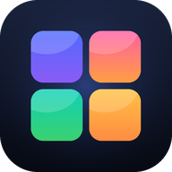

Ti60 风格迁移
FPGA · BLE 图传控制台
未连接
安装
此浏览器无法使用 Web Bluetooth
连接
未连接
BLE 串口 · 自动识别
FFE0 / FFF0 / NUS
连接蓝牙模块
断开
模块 UUID 与安装说明
配置
自动识别（FFE0 / FFF0 / Nordic UART）
HC-08 / HM-10 / JDY：FFE0 · FFE1
FFF0 · 通知 FFF1 · 写 FFF2
Nordic UART：6E400001…
自定义
服务 UUID
通知特征
写特征
Chrome / Edge 可通过顶栏“安装”把本页变成独立窗口；HTTPS 或 localhost 下支持离线缓存。iPhone 上的浏览器不支持 Web Bluetooth。
风格强度
星空 · 50%
星空
starry
糖果
candy
马赛克
mosaic
羽毛
feathers
10%
30%
50%
70%
100%
四个风格共用 5 档强度标签，每个风格独立记忆自己的档位，默认中间档。
拍摄图传
原生 320×240
分辨率
320×240
JPEG 质量
40
60
75
90
发送窗口
1
2
4
8
板卡发送速率
0.8 KB/s
1.5 KB/s
2.5 KB/s
4 KB/s
6 KB/s
9 KB/s
拍摄
中止
连拍
—
板卡控制
与实体旋钮同步
旋钮 —
OSD —
视图 —
切换视图
开关 OSD
G1
星空
G2
糖果
G3
马赛克
G4
羽毛
档位快捷键在下一次拨动实体旋钮前有效。
串口
板卡原样回显
发送
画面
等待拍摄
还没有画面
连接后点“拍摄”，板卡会把当前风格结果传回来。
保存 JPEG
分包接收 · CRC32 校验 · 缺包自动 NAK 重传
Ti60F225 · Web Bluetooth 控制台 · 建议使用 Chrome / Edge · 本地文件直接打开亦可